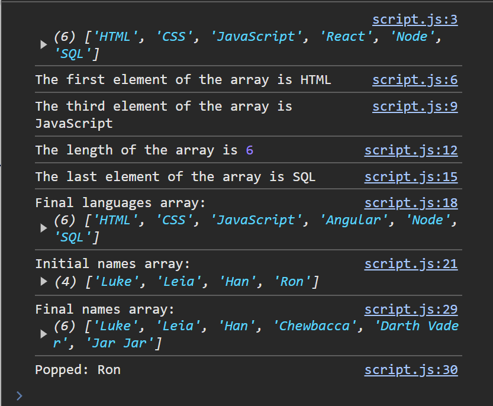

Arrays
Objectives
-
Learn what an array is and how it works.
-
Read MDN documentation to learn how to use pre-built array functions and access common properties.
-
Use an array to store a list of items.
-
Learn how to retrieve and change items in an array.
Key Terms
array
a data structure used to store an ordered list of data.
let colors = ["red", "yellow", "green"];
array index
a numeric position an item is located at in an array; can be used to access that item
let colors = ["red", "yellow", "green"];
console.log( colors[0] ); // Output => "red"
array.length
property available on arrays that returns the number of items in the array
let colors = ["red", "yellow", "green"];
console.log( colors.length ); // Output => 3
square brackets
[] symbols used to declare an array or access an item in an array by index
Mozilla Developer Network
resource for documentation on available built-in JavaScript functions (methods)
You can learn about all the functions available for arrays here on MDN
array.push()
function that adds an item to the end of an array
array.pop()
function that removes the last item from an array
mutating function
particular type of function that modifies the object it is called on, rather than simply returning a value
e.g. push and pop are both mutating functions
return value
data that a function "gives back" to the invoker, which can optionally be assigned to a variable
e.g. the item previously at the end of an array if provided as a return value from the pop function
Arrays Assignment
In this assignment, you will learn about the basics of JavaScript arrays.
Make sure to go through the guide to starting an assignment before continuing. There will be a folder called "examples" where you can try out the example code below.
Arrays Background
Arrays are used for storing ordered lists of items.
Initializing
This will create an array of three restaurants.
let restaurants = ["State Bird", "House of Prime Rib", "McDonalds"];
Length
To see how many items are in an array, we can use the length property.
let restaurants = ["State Bird", "House of Prime Rib", "McDonalds"];
console.log(restaurants.length);
Accessing
Every item in an array has an index it can be accessed at.
The first item is at index 0, the second is at index 1, and the third is at index 2.
You can access an item by index using square brackets.
let restaurants = ["State Bird", "House of Prime Rib", "McDonalds"];
console.log("first item: " + restaurants[0]);
console.log("second item: " + restaurants[1]);
Changing Items
We can also use square brackets to update an item in an array.
let restaurants = ["State Bird", "House of Prime Rib", "McDonalds"];
restaurants[0] = "Burger King";
console.log("first item: " + restaurants[0]);
The first item has been changed to "Burger King" (sorry, foodies).
Array Documentation and Methods Background
After doing some coding, you'll start to notice that many times you are performing the same tasks in your programs.
Languages try to make your life easier by packaging these common tasks into functions or methods you can then use in your programs.
You've already used at least two built-in functions already: console.log() and prompt()
You also may have already noticed that when you are using (invoking) functions, parentheses are part of the syntax, and sometimes allows you put provide data between the parentheses as an input (argument) to the function.
But how do you know if there is already a built-in function for what you want to do?
The best way is to start getting comfortable reading the language documentation. For JavaScript, Mozilla Developer Network (MDN) is going to be your best resource.
Remember, the goal is not to memorize all the array methods there are, but to get comfortable looking them up and reading about them when you need them.
Let's take a look at two functions from the documentation that work specifically for arrays.
push()
push() is a convenient way add a single item to the end of an array. As the documentation shows, it must be called on an existing array (not out in the open like you can with console.log() or prompt()).
let fruits = ["Apple", "Banana"];
fruits.push("Mango");
console.log(fruits);
Previously, we had an array of two items. By calling fruits.push("Mango"), we have added a third item to the end of the array.
pop()
pop() is the opposite of push(). Instead of adding a new item, pop() will remove the top item from the array.
Note that push() and pop() will both actually modify the array you invoke them on. When a function modifies the object it's used on, we say that this is a mutating function.
let fruits = ["Apple", "Banana"];
fruits.pop();
console.log(fruits);
console.log(fruits.length);
After running the code above, the mutated fruits array now has only 1 item left in it.
In addition to mutating the array, you can also capture the result of the pop() function and assign it to a variable.
let fruits = ["Apple", "Banana"];
let poppedItem = fruits.pop();
console.log(poppedItem);
The value that a function gives you back (in this case, the popped item), is referred to as that function's return value.
Complete Arrays Exercise before continuing
Arrays Exercise
-
Open
index.htmlin Live Server and read the HTML code. Open up the Developer Console. Openscript.jsin VS Code. -
Declare a variable named
languages, and assign to it an array that contains the following strings:"HTML""CSS""JavaScript""React""Node""SQL"
-
Log the
languagesarray to the console. -
Declare a variable
firstElementand assign to it the first element in the array. Remember to use the element's index number to do so. -
Call
console.logwith 2 inputs:"The first element of the array is"andfirstElement, like this:console.log("The first element of the array is", firstElement);- Moving forward, we will refer to this format as "labeling our message". For example, the above instruction would be rewritten as: Log
firstElementto the console with the label:"The first element of the array is".
- Moving forward, we will refer to this format as "labeling our message". For example, the above instruction would be rewritten as: Log
-
Declare a variable
thirdElementand assign to it the third element in the array. -
Log
thirdElementto the console with the label:"The third element of the array is". -
Declare a variable
lengthand assign to it the length of thelanguagesarray. Use the array's built-in property for this step. -
Log
lengthto the console with the label:"The length of the array is". -
Declare a variable
lastElementand assign to it the last element in the array. Use thelengthvariable or the array's built-inlengthproperty for this step. -
Log
lastElementto the console with the label:"The last element of the array is". -
Reassign the fourth element of the array to the string
"Angular". -
Log the
languagesarray to the console with the label:"Final languages array: ". -
Before moving on, read the documentation for 3 more commonly used Array methods:
- shift(): Like the opposite
pop(). Removes an element from the beginning of an array and returns it. - unshift(): The opposite of
push(). Adds an element to the beginning of an array. - indexOf(): Finds an element and returns its index number
There may be a few questions on these methods on the quiz...
- shift(): Like the opposite
-
Declare a new variable
namesand assign to it an array that contains following strings:"Luke""Leia""Han""Ron"
-
Using Array's
push(),pop(), and index numbers, complete the following tasks:- Log the
namesarray to the console with the label:"Initial names array:" - Remove
"Ron"from the end of thenamesarray, and assign it to a variable namedpopped - Add
"Chewbacca"to the end of the array. - Add
"Anakin"to the end of the array. - Add
"Jar Jar"to the end of the array. - Replace
"Anakin"with"Darth Vader"using the correct index number. (Hint: Use theindexOf()method to find the index number of"Anakin") - Log the
namesarray to the console with the label:"Final names array:" - Log the
poppedvariable to the console with the label:"Popped:"
- Log the
-
Take a screenshot of your Developer Console output. It should look similar to this:

Submitting
Please follow the instructions in submitting an exercise to submit your assignment solution.